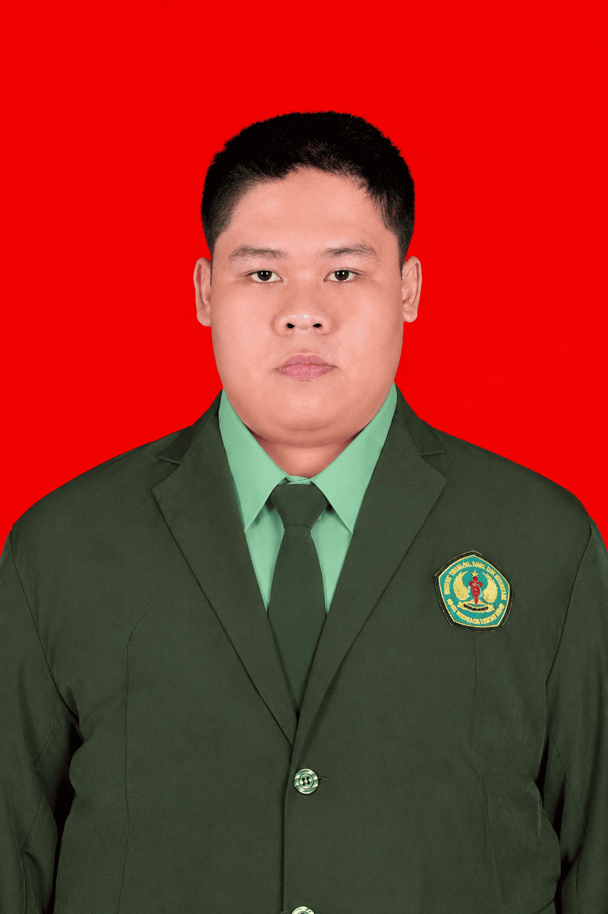

Lulusan D3 RMIK dengan keahlian di bidang rekam medis, sistem informasi fasilitas kesehatan, dan pengembangan aplikasi. Berpengalaman di registrasi klinis, SIMRS, E-Puskesmas, BPJS, serta membangun solusi digital untuk manajemen pelayanan kesehatan.

Lulusan D3 Rekam Medis dan Informasi Kesehatan dari ITSK RS dr. Soepraoen Kesdam V/Brawijaya (IPK 3.90/4.00) yang berdedikasi pada pelayanan front office klinis dan pendaftaran pasien. Memiliki kekuatan utama pada komunikasi adaptif, observasi tajam, dan empati dalam menciptakan pengalaman layanan yang berpusat pada pasien (patient-centric).
Terlatih mengoperasikan berbagai sistem informasi fasilitas kesehatan — SIMRS, E-Puskesmas, Mobile JKN — dan sangat cekatan dalam mengurai antrean di jam sibuk. Selain aspek klinis, aktif membangun solusi berbasis teknologi untuk mendukung efisiensi administrasi medis.
Kombinasi keahlian klinis, sistem informasi kesehatan, dan pengembangan aplikasi.
Sistem informasi kesehatan dan aplikasi yang dikembangkan secara mandiri maupun dalam konteks akademik.
Sistem Informasi Manajemen Rumah Sakit versi pembelajaran — mencakup modul pendaftaran, rawat jalan, dan pelaporan statistik sederhana.
⏳ Segera tersedia di GitHubSistem monitoring personal health record — membantu pengguna memantau riwayat kesehatan pribadi secara mandiri dan terstruktur.
⏳ Segera tersedia di GitHubAplikasi antrean digital terintegrasi dengan tampilan monitor dan audio pemanggilan — dirancang untuk kondisi loket yang sibuk.
⏳ Segera tersedia di GitHubPurwarupa sistem pendaftaran mandiri berbasis web dengan pencetakan stiker termal dan simulasi SEP BPJS untuk mempercepat alur administrasi loket.
⏳ Purwarupa / Inovasi PKLTerbuka untuk peluang kerja di bidang rekam medis, sistem informasi kesehatan, administrasi klinis, maupun pengembangan aplikasi fasyankes. Juga terbuka untuk kolaborasi freelance dan proyek digital kesehatan.
💬 Chat via WhatsApp